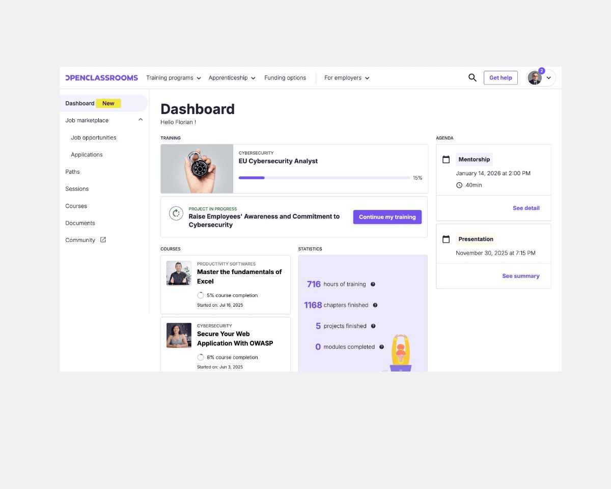
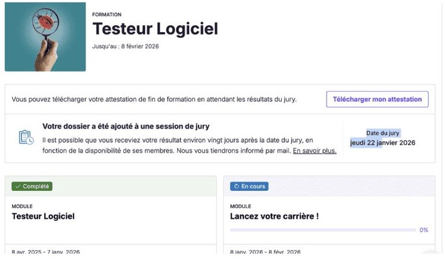
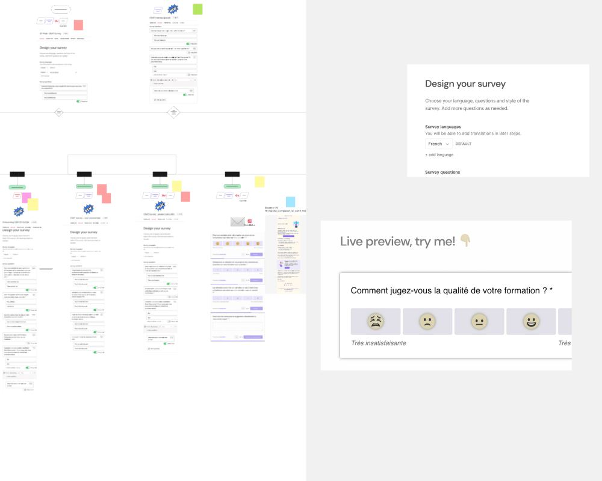
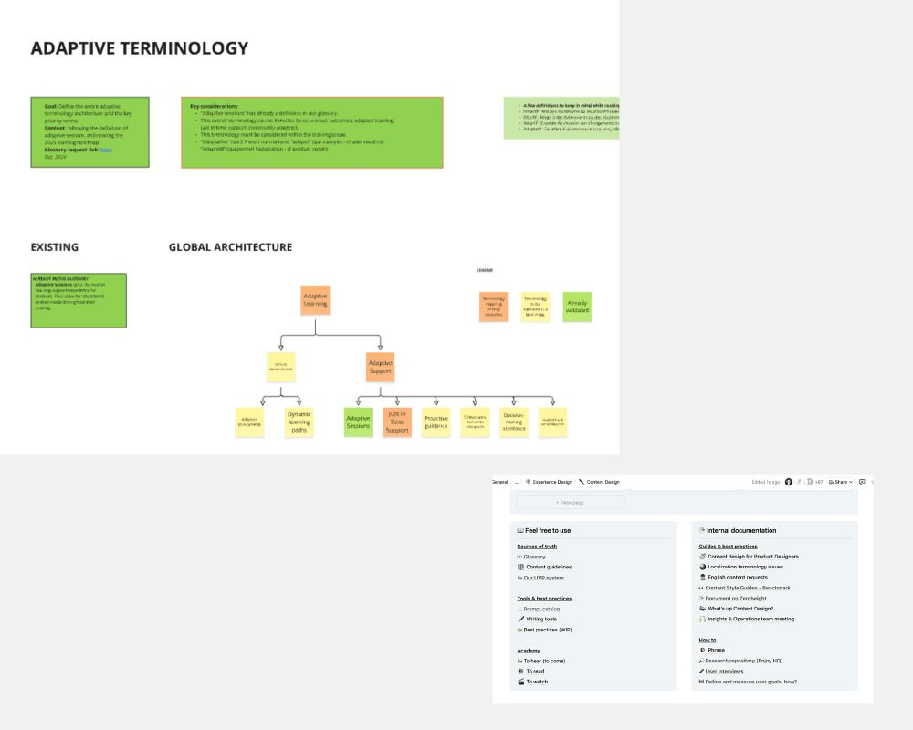
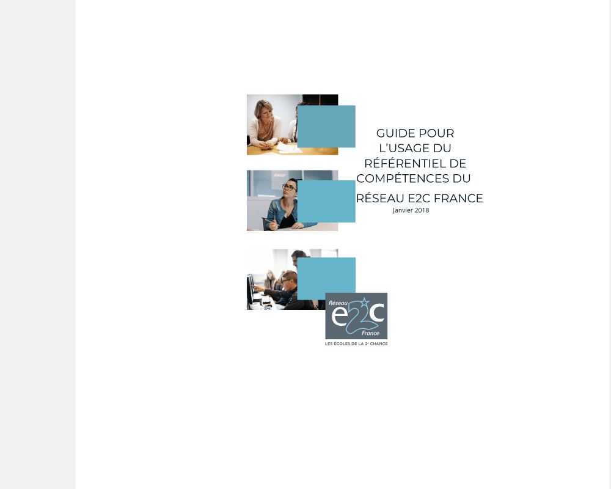
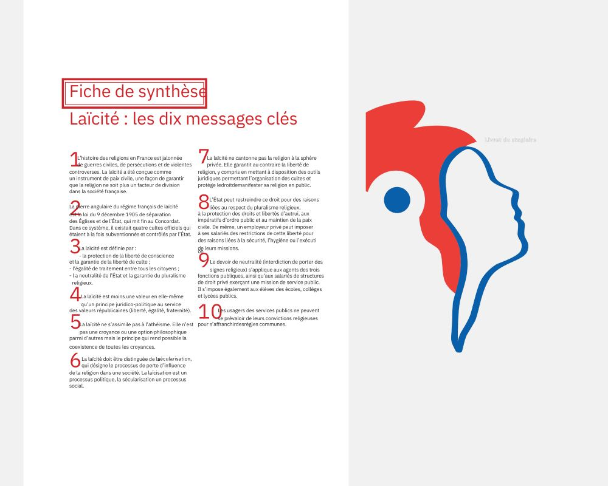
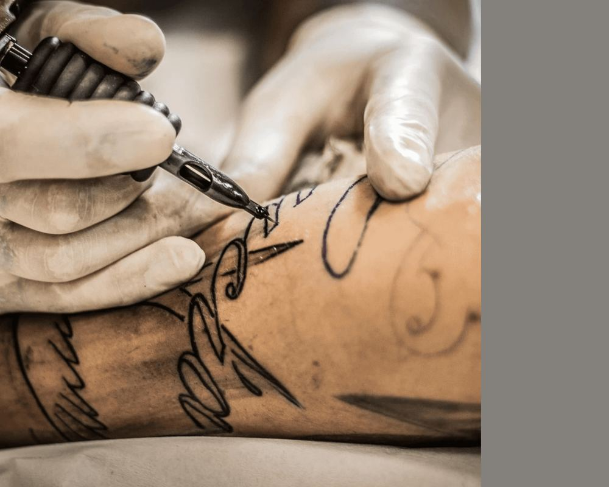
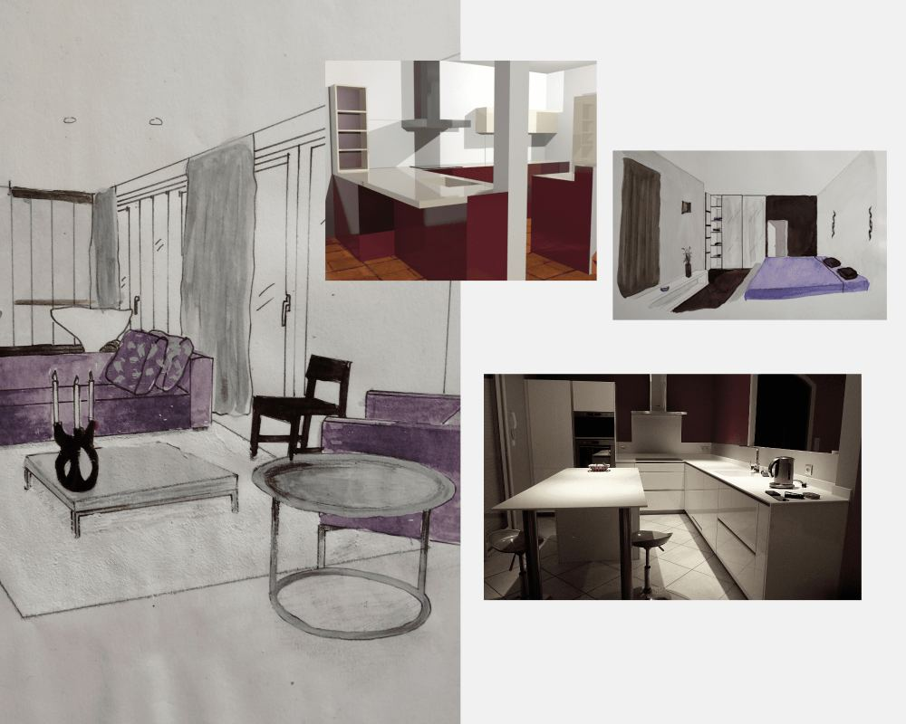

01OpenClassrooms01 / OpenClassrooms
Tableau de bord étudiant
Concevoir le tableau de bord où chaque étudiant suit sa progression, de l'inscription à la certification.
4 000+étudiants impactés
Experience Designer spécialisée en contenu, faisant le lien entre détails micro et vision macro. Dix ans dans l'éducation, dédiée à des missions porteuses de sens.
Quatre projets menés chez OpenClassrooms : de la recherche utilisateur à la mise en production, avec un impact mesuré.

01OpenClassroomsConcevoir le tableau de bord où chaque étudiant suit sa progression, de l'inscription à la certification.

02OpenClassroomsRepenser la façon dont les apprenants visualisent et suivent leur parcours de formation dans la durée.

03OpenClassroomsTransformer 4 200 retours mensuels en un signal clair, exploitable par toutes les équipes.

04OpenClassroomsUn langage commun pour toute l'entreprise : 250+ termes, une seule source de vérité.
Learning design, politique publique, recherche en accessibilité, design d'espace… La curiosité comme fil rouge, sur dix ans de missions.




Je suis Mathilde, Experience Designer passionnée par toutes les disciplines du design. Dix ans dans l'éducation m'ont appris qu'exigence de conception et missions porteuses de sens ne s'opposent jamais.
L'apprentissage continu et une curiosité sans limite font de mon parcours une exploration de connexions : entre le produit et le contenu, entre le détail et la vision d'ensemble, entre les gens et les systèmes qu'ils habitent.
Je m'intéresse au design centré sur le vivant, à la robustesse, et — entre autres sujets — à la philosophie de Grothendieck : comprendre un problème en construisant le bon contexte autour de lui.
Admirat vient du latin admirari, « s'étonner ». C'est à peu près la définition de mon métier.
Le microcopy et la vision produit sont le même métier, à deux échelles.
Concevoir en tenant compte des personnes, mais aussi des systèmes qui les entourent.
Des solutions qui tiennent dans le temps, les cas limites et le passage à l'échelle.
Apprendre en continu, relier les disciplines, s'étonner pour mieux concevoir.
Ouverte à des postes de designer — content, research, experience — et à des missions freelance. Écrivons-nous.